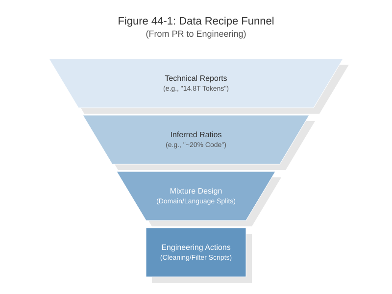
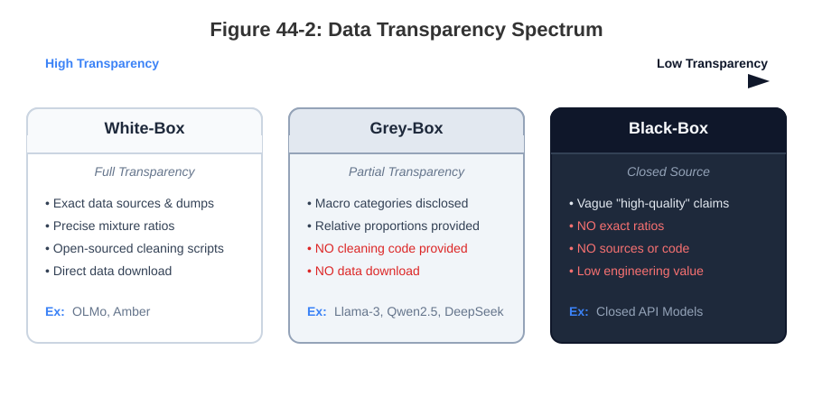
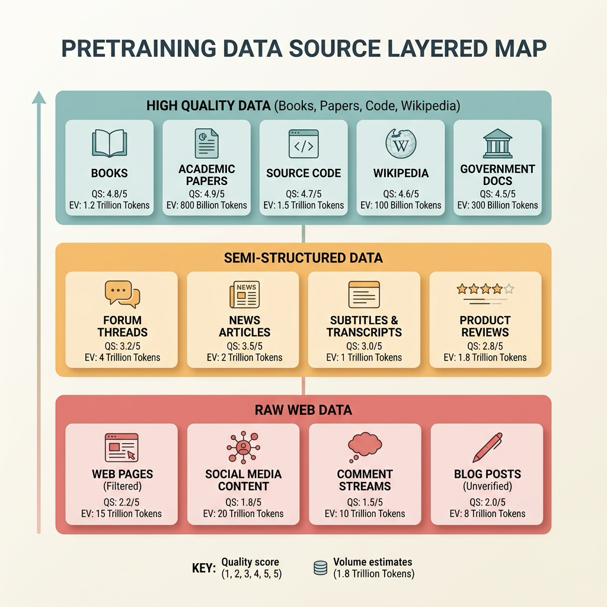
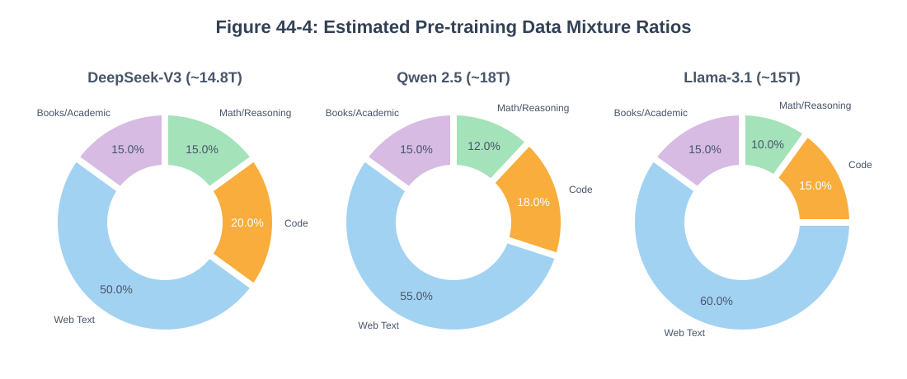
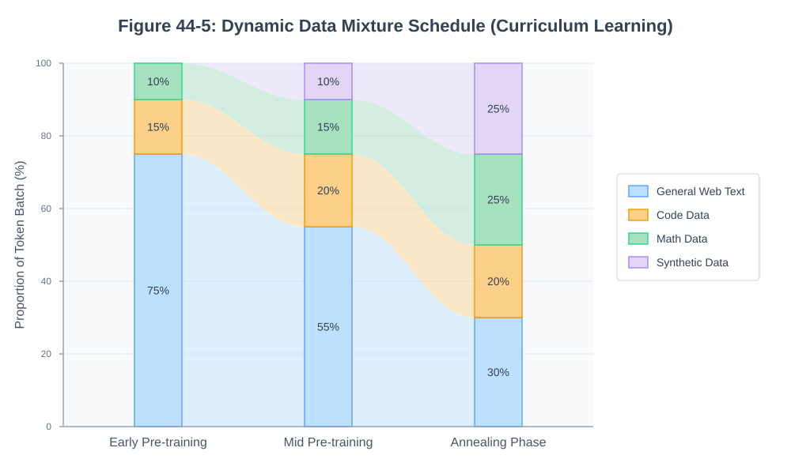

Chapter 44: LLM Pre-Training Recipes: DeepSeek and Qwen¶
Abstract¶
The pretraining data recipes of large language models (LLMs) are typically disclosed in the form of static mixture tables, yet what truly determines whether a reproduction succeeds or fails is the phased data pipeline design underlying those recipes. This chapter adopts the "recipe" as an analytical lens to systematically dissect the pretraining data engineering practices of leading models—DeepSeek-V3, Qwen2.5, Llama-3.1, and the fully open-source OLMo-2. The discussion begins by establishing a "transparency spectrum" defined along four dimensions—sources, mixture ratios, cleaning rules, and downloadability—to distinguish white-box, grey-box, and black-box disclosures. It then cross-examines each model's data composition across general web text, code, mathematics, books, and academic literature, and analyzes the Chinese-to-English ratio and multilingual sampling strategies, cross-file dependency parsing for code data, synthesis and verifier pipelines for mathematical reasoning data, and long-text sources versus short-document packing strategies. Finally, the chapter focuses on curriculum-based multi-stage training schedules, explaining when data enters training, at what quality, and at what difficulty level. The chapter argues that reproducing large models under a limited token budget cannot rely on naive proportional scaling; instead, the budget must be partitioned into phases—coverage, capability consolidation, long-context extension, and annealing—so that the recipe is translated into an auditable, verifiable engineering process.
Keywords¶
LLM; data recipe; open-source large language models; training data; phased scheduling
Learning Objectives¶
- Apply the transparency spectrum to distinguish the white-box, grey-box, and black-box disclosure levels of models such as DeepSeek-V3, Qwen2.5, Llama-3.1, and OLMo-2.
- Compare the data composition of leading models across general web text, code, mathematics, books, and academic literature, and analyze the Chinese-to-English ratio and multilingual sampling strategies.
- Design cross-file dependency parsing pipelines for code data, synthesis and verifier pipelines for mathematical reasoning data, and strategies for long-text versus short-document packing.
- Design curriculum-based multi-stage training schedules covering coverage, capability consolidation, long-context extension, and annealing phases.
- Explain why proportional scaling is insufficient under a limited token budget, and reproduce an auditable, verifiable pretraining data pipeline.
Case Study: The Failure of Proportional Scaling in 1B-Token Reproduction¶
In attempts to reproduce large language model (LLM) training at a smaller scale, researchers often rely on the "Proportional Scaling" assumption: if a large model successfully trains on tens of trillions of tokens, then reducing the token budget to 1B tokens while proportionally shrinking model parameters, batch size, learning rate, and data mixture ratios should yield a smooth and predictable descent in loss. However, practical engineering outcomes frequently deviate from this assumption.
In typical 1B-token reproduction experiments, the following pattern commonly emerges: during the early training phase (the first 20% of tokens), the model quickly fits common lexical patterns, and the loss descends normally. However, entering the middle and late phases, validation loss begins to oscillate, and perplexity reduction on code and math samples slows to a crawl. Final evaluations often reveal that while the model has memorized high-frequency patterns, it exhibits no improvement in long-context comprehension or logical reasoning. Control experiments demonstrate that models blindly adopting a globally static data mixture significantly underperform those employing a phased, curriculum-based scheduling strategy.
The root cause of such failures lies not in hyperparameter tuning, but in a coarse-grained understanding of the "data recipe." The domain data proportions (e.g., percentages of web, code, and math data) disclosed in technical reports for large-scale models are essentially "statistical cross-sections" of the entire training lifecycle, rather than "static blueprints" for every training step. Under a highly restricted token budget like 1B tokens, this misconception is severely amplified. Large-scale training possesses a sufficient token budget to allow the model to first absorb general language distributions before gradually tackling high-difficulty structured data. If a short-budget training run maintains a uniform mixture ratio from the beginning, the model is prematurely exposed to stylistically diverse and highly difficult data (such as complex code and proofs) before it has established a stable language foundation. As a result, the precious early learning window is partially wasted on lower-quality web text, while high-value samples are sampled too sparsely in later stages to provide a sustained, effective gradient signal, leading to a profound misalignment in training cadence.
Therefore, an effective pretraining "recipe" must be understood as a highly dynamic, phased data pipeline. A canonical practice model typically comprises three core phases: the first phase is dominated by clean General Text to construct foundational language capabilities; the second phase progressively increases the weight of domain-specific knowledge (e.g., encyclopedias, books, basic code) to introduce structured expressions; and the third phase focuses on injecting mathematical derivations, complex reasoning, and high-quality alignment data (such as synthetic instruction samples) to drive targeted leaps in higher-order capabilities using smaller volumes of refined data. This case study underscores that reducing the token budget does not equate to mechanically scaling down hyperparameters and data ratios. Small-scale reproduction imposes even stricter demands on training cadence design, requiring that each sampling step in pretraining be dynamically adjusted according to the model's current capability development phase.
In contrast to naive scaled-down trial-and-error, DeepSeek-V3 (Liu et al. 2024) and Qwen2.5 (Hui et al. 2024) demonstrated a strong awareness of data phasing from the outset of development. Rather than training end-to-end on a single fixed-ratio mega-mixture, they front-loaded broad-domain foundational knowledge and code in the early pretraining stages and introduced high-quality synthesized long-form and mathematical data in the middle-to-late stages. This engineering strategy of "dynamically adjusting data ratios according to the model's developing capabilities" not only reduced the risk of gradient explosions caused by distributional shocks, but also became a key reason these models maintained steadily improving reasoning abilities as they scaled under the scaling laws.
44.1 The Public Data Transparency Spectrum¶
Before examining specific pretraining data recipes, it is necessary to establish a credibility scale for the available information. Intensifying commercial competition has produced wide variation in how today's "open-source models" disclose their data. Without filtering out promotional language in technical reports, engineers can easily misread marketing claims as genuine data engineering documentation. This chapter therefore classifies the degree of data disclosure by leading open-source LLMs along a "transparency spectrum" defined by four dimensions: Sources, Mixture/Ratio, Cleaning Pipeline, and Downloadability.

{kind=link}
As shown in Figure 44-1, the data recipe funnel narrows progressively from top to bottom. The macro-level figures disclosed in technical reports (e.g., 14.8T tokens) represent only the surface layer; being able to infer the precise mixture ratios for each domain goes one level deeper; and what can actually be translated into engineering actions—such as heuristic filter thresholds and cleaning scripts—lies at the finest level of detail.
- White-box (fully transparent): These models not only publish their papers but also open-source the entire data factory, from crawler to final packaging. Their data sources are specified down to individual CommonCrawl dumps, mixture ratios are given to the decimal point, cleaning scripts (including deduplication, filtering, and classifier weights) are fully released, and direct HuggingFace download links are provided. The OLMo series (Groeneveld et al. 2024) and some earlier Amber models are canonical examples, offering high data asset value to the open-source community.
- Grey-box (partially transparent): This is the quadrant occupied by most of today's leading open-source models (e.g., DeepSeek-V3, Qwen2.5, Llama-3). These models provide detailed enumeration of high-level data categories (e.g., Web, Code, Math) in their technical reports, and often disclose relative proportions and total volumes. However, they do not open-source the specific cleaning pipeline code, nor do they provide the final cleaned, high-quality corpus packages. Readers must construct approximate reproduction workflows from the disclosed recipes.
- Black-box (closed source): Only vague references appear in the technical report—"we collected a large and high-quality multilingual corpus"—with no source breakdown, no specific ratios, no code, and no data downloads. The figures disclosed in such cases typically serve only public-relations purposes and carry minimal engineering value.
Figure 44-2 illustrates the corresponding workflow or structure.

{kind=link}
Note: The foundational methodologies for general data collection, cleaning (e.g., MinHash LSH deduplication), and tokenization have already been covered in detail in Ch04 (Data Sources), Ch05 (Cleaning), and Ch06 (Tokenization). The hierarchical map of pretraining data sources presented in Chapter 4, for instance, forms the foundation for the discussions in this chapter. This chapter and this section of the book will not revisit those lower-level infrastructures, focusing instead on the specific engineering trade-offs each model makes at the recipe stage.
Figure 44-3 illustrates the corresponding workflow or structure.

{kind=link}
Table 44-1 summarizes the corresponding comparison and engineering considerations.
Table 44-1: Data Transparency Spectrum of Leading Open-Source LLMs (6 rows × 5 columns)
| Model Family | Source Category Disclosure | Mixture Ratio Disclosure | Cleaning Rules / Code Disclosure | Pretraining Data Downloadable | Overall Transparency Rating |
|---|---|---|---|---|---|
| DeepSeek-V3 | Detailed high-level categories | Macro ratios disclosed | High-level strategy descriptions only | No | Grey-box (partially transparent) |
| Qwen2.5 series | Detailed high-level categories | Evolution and ratios disclosed | Classifier / deduplication strategies described | No | Grey-box (partially transparent) |
| Qwen3 (expected) | Detailed high-level categories | Evolution and ratios disclosed | New cleaning pipeline described | No | Grey-box (partially transparent) |
| Llama-3.1/3.3 | High-level categories public | Per-phase token ratios disclosed | Phased cleaning and schedule described | No | Grey-box (partially transparent) |
| OLMo-2 | High-level categories public | Per-phase ratios disclosed | Code and strategy fully open-sourced | Partially public | Open (high transparency) |
| --- |
44.2 Cross-Model Data Composition Comparison Table¶
After filtering out promotional language in technical reports, the critical question concerns the actual composition of each model's training data pool. Table 44-2 summarizes pretraining data composition based on public technical reports, backward estimates from model characteristics, and open-source community reproduction efforts. This table extends the "Table 4-1: Data Source Types, Licenses, and Risk Matrix" introduced in Ch04 with practical, production-oriented detail.
(Note: Figures in the table follow the annotation convention: [D] = explicitly disclosed in the report; [I] = reasonable inference based on model behavior and known information; [E] = community or author estimate.)
Table 44-2: Pretraining Data Composition Comparison for Leading Open-Source LLMs (6 rows × 8 columns)
| Data Category | Subcategory / Characteristics | Quality Requirements | DeepSeek-V3 (14.8T) | Qwen2.5 (18T) | Qwen3 (inferred) | Llama-3.1/3.3 (inferred) | OLMo-2 (inferred) |
|---|---|---|---|---|---|---|---|
| General Web Text | High-quality web pages | Very high; deduplicated, marketing content removed | ~50% [I] | ~55% [I] | ~50% [E] | ~50% [I], used in phased manner; high-frequency front-loaded | High proportion; strict deduplication, multi-tier filtering |
| Chinese Web (specialized) | News / forums / encyclopedias | Semantically complete; spam removed | High proportion, specialized cleaning [D] | Very high proportion, multi-tier deduplication [D] | Stricter filtering [E] | High proportion, multi-phase cleaning with enhanced deduplication [D] | High proportion, multi-tier deduplication, dedicated spam filtering [D] |
| Books | E-books / publications | Copyright-compliant, extended logical coherence | ~5–10% [E] | ~5% [E] | ~5% [E] | ~5–10% [E], high-quality data in later phases | ~5–8% [E], used in Dolmino Mix high-quality phase |
| Code | Source code / Issues / PRs | Multi-language, project structure preserved | ~15–20% [E] | ~18% [I] | ~20% [E] | ~15% [E], phased enhancement for structured learning | ~15–20% [E], project structure and multi-language coverage preserved |
| Mathematics / Logic | Forum posts / synthetic derivations | Format clean, logically rigorous | ~10–15% [E] | ~12% [I] | ~15% [E] | ~10% [E], high-quality math data concentrated in later phases | ~10–15% [E], used in Dolmino Mix high-quality phase |
| Academic Literature | ArXiv / medical / legal | Professional terminology, formula parsing | ~5% [I] | ~5–8% [I] | ~8% [I] | ~5% [I], primarily high-quality journals and open-access papers | ~5–8% [I], concentrated in Dolmino Mix academic phase |

{kind=link}
Examining this comparison table horizontally (as illustrated in Figure 44-4) yields three important observations:
- Rising proportions of code and math data as a key driver of reasoning capability: In early LLMs such as GPT-3 or LLaMA-1, code and math data comprised only about 5% of the total corpus and were primarily regarded as supplements for specific vertical-domain capabilities. In DeepSeek-V3 and Qwen2.5, however, the combined share of code and math data approaches or exceeds 20–30% [E]. High-density logical and structured code data is an important source for improving models' general logical reasoning ability—not merely coding ability per se. The strict syntactic-tree properties of code data help language models learn causal relationships.
- The effective proportion of general web text declining across generations: Despite continuously growing total token counts (reaching 14.8T+), the actual relative proportion of casual web content and unstructured documents is declining. Model teams tend to expend compute on deduplication and strict heuristic-based filtering to discard large quantities of web data, reserving training budget for high-quality academic and synthetic data. This indicates that scaling laws (Kaplan et al. 2020) are shifting from pure "scale" toward "effective information density at scale."
- Synthetic data quietly taking over the middle and late stages of pretraining: Naturally occurring high-quality human-generated data—especially detailed mathematical derivation steps and reasoning chains—is approaching exhaustion. Both DeepSeek and Qwen teams have introduced large amounts of synthetic question-answer pairs and mathematical derivations generated by prior, stronger models during the middle-to-late stages of pretraining. These data fill the gaps left by excessively large logical leaps in naturally occurring text.
44.3 Chinese-to-English Ratio and Multilingual Strategy¶
In terms of language distribution strategy, current open-source models can be broadly divided into two camps: "dual-dominant Chinese–English" and "English-dominant." Qwen2.5 and DeepSeek-V3 are canonical representatives of the former.
Qwen2.5's "Pan-Multilingual" Strategy¶
Qwen2.5's goal from the outset was not simply to build a bilingual model but to cover the world's major languages (supporting more than 29 languages). This introduces a significant data engineering challenge: high-quality data for long-tail low-resource languages is extremely scarce, and can easily cause negative transfer across languages—the so-called "alignment tax." To address this, the Qwen team employed a sophisticated language-specific sampling weight adjustment strategy.
- For ultra-high-resource languages such as English, they applied aggressive MinHash LSH (Broder 1997) deduplication followed by downsampling to prevent homogenized overfitting of world knowledge.
- For low-resource but high-quality language data (e.g., high-quality Arabic encyclopedias), document-level upsampling was used to increase model exposure.
More critically, Qwen extensively leveraged multilingual alignment corpora (parallel machine-translation data and multilingual Wikipedia) to improve the compression efficiency of multilingual tokens in the vocabulary, thereby reducing inference costs for low-resource languages and improving cross-lingual knowledge transfer.
DeepSeek-V3's "Chinese–English Absolute Dual-Core" Strategy¶
Rather than pursuing broad multilingual coverage, DeepSeek-V3's strategy emphasizes a Chinese–English dual core: maintaining strong Chinese alignment and comprehension capability while relying primarily on larger-volume, higher-quality English community data—especially code and academic documents—for reasoning and logic. In terms of the recipe, DeepSeek did not blindly pursue a "numerical absolute advantage" for Chinese in pretraining. High-quality STEM discussions, open-source code, and academic papers on the internet remain predominantly in English. Consequently, DeepSeek's Chinese data cleaning is typically more stringent, using high-threshold quality classifiers to remove large quantities of low-quality Chinese marketing content and content-farm material. Although the resulting Chinese corpus is relatively smaller in volume, it is of higher purity—sufficient to anchor the model's Chinese expression habits—while reasoning capabilities are driven more by the logic, code, and academic structures provided by high-quality English tokens. This "English side reinforces reasoning, Chinese side reinforces expression" recipe has become a typical approach for balancing resource efficiency with bilingual capability.
44.4 The Transfer Dividend of Code Data¶
(Note: The underlying collection sources, deduplication logic, and general sources such as The Stack for open-source model code data have been systematically introduced in Ch04 and will not be repeated here; this section focuses on the higher-level engineering trade-offs of advanced models.)
In high-performance model training, code models and base models are not two isolated paths. Training dedicated Coder models and feeding their learned logical capabilities back into the base model can be termed the "transfer dividend of code data."
DeepSeek-Coder to V3: The Progression Path¶
DeepSeek validated the approach of using DeepSeek-Coder to explore code capability as early as V2. When building V3, the code data was no longer a simple "full GitHub repository crawl." The engineering team constructed a fine-grained dependency graph for code (repository-level parsing). Experience has shown that if code is simply fed to the model as isolated text blocks at the file level, the model primarily learns fragmented syntactic rules. Only by concatenating files in their repository dependency order (defining structures before calling interfaces) through cross-file concatenation does the model more readily learn project-level architectural logic. This file-level topological sorting is an important component of DeepSeek-V3's recipe for maintaining strong code capabilities at relatively modest computational cost.
Qwen2.5-Coder: Co-Evolutionary Development¶
The Qwen team likewise places significant emphasis on the transfer value of code data. The base corpus of Qwen2.5 incorporates filtered code data at the scale of several trillion tokens—not only GitHub source code but also a large volume of technical blog posts containing code snippets, StackOverflow Q&A, and Jupyter Notebook interaction records. This "text-code interleaved" data helps bridge the semantic gap between ambiguous human intent and precise machine instructions.
Llama-3 Code Data Strategy¶
The Llama-3 series (including 3.1 and 3.3) incorporated large-scale code data in long-context capability training, sourced primarily from public repositories and high-quality code collections such as GitHub projects, public issue trackers, and pull-request logs. The core objective is to provide structured, parseable logical patterns enabling the model to learn function definitions, variable scoping, logical nesting, and common algorithm implementations.
In the training pipeline, code data is used in a phased manner: the early phase uses general web text and long-form data to establish a language foundation; the middle phase gradually introduces code and math data to improve the model's logical reasoning and structured understanding capabilities; the late annealing phase resamples and upsamples high-quality code data to strengthen the model's generation capabilities in complex logic and multi-step computation scenarios. Phased processing ensures that code data does not disrupt the model's learning of natural language patterns by being introduced too early, while also ensuring that the model maintains stable performance on both short-context and long-context tasks.
For short-document packing, Llama-3 applies isolated processing to code data: maintaining continuity within individual projects or files while avoiding arbitrary cross-project or cross-syntax-environment concatenation, thereby reducing potential semantic conflicts and context jumps. In addition, RoPE (Rotary Position Embedding) is appropriately extended in the code data phase, allowing the model to capture function call relationships, loop nesting, and class inheritance structures within a longer context window, providing support for long code generation and cross-function reasoning.
OLMo-2 Code Data Strategy¶
As a fully open-source project, OLMo-2's code data sources are more transparent, including multi-language source code, issue tracking records, code review logs, open-source library documentation, and programming Q&A from StackExchange. Training likewise adopts a two-phase curriculum: the first phase uses large-scale web text to establish a language foundation, and the second phase—Dolmino Mix high-quality data—concentrates code data for capability consolidation. Code data enters the model in structured, deduplicated form during this phase, preserving the integrity of functions and logical blocks to avoid fragmented segments impeding learning.
OLMo-2 emphasizes multi-language coverage and project structure preservation in its code data processing: each sample attempts to retain the original project's directory and file hierarchy so the model can learn modular design, dependency relationships, and naming conventions. Deduplication is strictly enforced to prevent the model from memorizing templated code patterns, while in mathematical derivation and algorithm implementation code, complete logic and comments are preserved to assist the model in learning higher-order logical reasoning.
Table 44-3 summarizes the corresponding comparison and engineering considerations.
Table 44-3: Code Data Sources and Scale for Leading Models (4 rows × 6 columns)
| Model Family | Estimated Total Code Scale | GitHub Source Code Share | Interactive Notebooks / Q&A Share | Cross-File Parsing (Repo-level) | Format Preservation Strategy |
|---|---|---|---|---|---|
| DeepSeek-V3 | ~2.5T tokens [E] | ~70% [E] | ~30% [E] | Strong support, topological sorting [D] | Indentation and directory tree preserved |
| Qwen2.5 | ~3T tokens [E] | ~65% [E] | ~35% [E] | Strong support, combined with FIM [I] | Markdown / Notebook preserved |
| Llama-3.1/3.3 | ~2.8T tokens [I] | ~70% [I] | ~30% [I] | Strong support, project/file integrity maintained [I] | Indentation, function blocks, and directory tree preserved [I] |
| OLMo-2 | ~2T tokens [E] | ~60% [E] | ~40% [E] | Strong support, project-level parsing [D] | Indentation, directory structure, and Notebook content preserved [D] |
44.5 The Synthetic Evolution of Mathematical and Reasoning Data¶
Injecting strong mathematical foundations during the pretraining phase is a central challenge in addressing LLM hallucination and logical incoherence. Since naturally occurring, properly formatted mathematical solution processes are extremely scarce, synthesis and cleaning have become the primary means.
DeepSeekMath's Verifier Pipeline¶
DeepSeek's rapid advances in mathematical capability owe much to the DeepSeekMath corpus (Shao et al. 2024) built during earlier development. Conventional crawlers frequently corrupt LaTeX formulas into garbled characters when scraping math-heavy web pages. The DeepSeek team not only rewrote a specialized DOM parser targeting MathJax and LaTeX tags in HTML but, more critically, introduced rule-based verification grounded in reinforcement learning and formal provers. They recalled candidate mathematical text from massive internet corpora and used smaller scoring models to filter out "golden samples" containing complete derivation logic. They then had earlier-generation models repeatedly solve problems from open-source problem banks, feeding back into the pretraining corpus those solution processes that passed absolute verification in a SymPy sandbox or Lean prover—substantially increasing the model's sensitivity to long-chain mathematical proofs.
Qwen2-Math's Synthesis Strategy¶
The Qwen team went further in their engineering treatment of mathematical data, relying extensively on synthetic data feedback loops. As revealed in the Qwen2.5-Math public disclosure, they used Qwen-Max (or an earlier powerful version) as a teacher model to generate multi-step chain-of-thought (CoT) solutions for foundational math problems on a large scale. To prevent synthetic data from causing distributional collapse, the engineering team introduced self-consistency verification (Wang et al. 2023): only if multiple independently generated derivation paths for a given problem all converge to the same correct unique answer in a sandbox is the synthetic derivation path allowed to enter the pretraining or post-training data stream. This means the scaling of mathematical data has entirely decoupled from the pace of human internet production and is now directly driven by compute.
44.6 Analysis of Long-Text Data Sources¶
In large language model training, long-text data is a core resource for supporting contextual comprehension, long-range dependency capture, and complex reasoning capability formation. This section analyzes the sources of long-text data, covering three main strategies: naturally occurring long-form text, synthetically generated text, and short-document packing, each with distinct advantages and limitations.
Note: the token scales, ratios, and window lengths in the tables in this section combine disclosures from public technical reports, model repository notes, community retrospectives, and behavior-based reasonable inferences; [D] indicates explicit disclosure, [I] indicates inference, and [E] indicates estimation. Different models may count tokens across pretraining, continued pretraining, post-training, or long-context continued training, so these numbers should not be treated as fully comparable precise facts.
Natural Long-Form Text¶
Natural long-form text typically originates from e-books, academic papers, technical manuals, public reports, and high-quality web articles. The primary advantage of such text is its complete structural integrity, semantic coherence, and clear logical relationships, making it well suited for training models to understand complex concepts and capture long-context relationships. For example, novel chapters, technical documents, and academic papers often contain thousands to tens of thousands of tokens of continuous content. When models encounter such text during pretraining, they can learn intra-chapter topic development, paragraph logic, and reasoning chains, which improves their downstream performance on long-form summarization, cross-paragraph question answering, and complex instruction following.
However, natural long-form text is limited in quantity, particularly in high-quality, clearly licensed corpora. Furthermore, texts from different sources exhibit pronounced stylistic differences—academic papers and news reporting differ significantly in sentence structure, terminology, and paragraph organization—which can cause the model to develop biases when handling specific text styles. As a result, model training typically requires phased sampling strategies to ensure balanced coverage of different types of long-form text, combined with appropriate text normalization and deduplication to maintain training diversity and semantic consistency.
Synthetically Generated Text¶
Synthetically generated text has emerged in recent years as an effective means of increasing the volume of long-context training data, primarily through generation by existing models or rule-based generation of extended continuous text. The core objective is to supplement the shortfall of natural long-form text—for instance, when domain-specific knowledge is insufficient or real data is restricted by copyright—by having models generate plausible long sequences or by combining existing short text segments into "pseudo-long text." This strategy can significantly expand the training corpus, giving models more opportunities for long-range dependency training beyond what natural long-form text can provide.
The advantages of synthetic text lie in its controllability and scalability. Researchers can specify the topic, length, and structure of generated text to meet the demand for different token counts or context spans at various training phases. Furthermore, through quality scoring, content filtering, and diversified generation strategies, the coherence and diversity of synthetic text can be maintained to a reasonable degree. However, synthetic text is inherently an approximation generated by models, and may exhibit logically imprecise, semantically repetitive, or unnaturally connected content; it requires manual sampling and automated quality assessment for filtering.
Short-Document Packing¶
Short-document packing combines multiple short text segments into long sequences to simulate the continuity of natural long-form text. These short texts may originate from news paragraphs, forum posts, question-answer pairs, code comments, or social media posts—individually short and semantically relatively self-contained. Packing typically considers document boundaries, topic consistency, and length control to ensure the resulting long sequences both satisfy the model's context-length requirements and maintain as much logical and topical coherence as possible.
The advantages of short-document packing lie in its flexibility and broad data coverage. Through packing, the quantity of trainable long-text sequences can be rapidly expanded while introducing multi-source, multi-style data that improves the model's adaptability to diverse content. Additionally, during pretraining, packing strategies can be combined with packing techniques and phased data scheduling to achieve cross-document isolation or cross-topic mixing, optimizing learning efficiency under long-context conditions.
However, the coherence and logical consistency of short-document packing generally cannot fully match natural long-form text; excessive packing may lead to context jumps, logical discontinuities, or topic mismatches. Packing strategies are therefore commonly combined with quality control and length stratification—for example, topic clustering, transition sentence generation, or repetitive content filtering—to reduce potential noise introduced by packing.
Comprehensive Analysis¶
In practice, all three strategies—natural long-form text, synthetically generated text, and short-document packing—are typically used in combination. Natural long-form text provides foundational semantic coherence and logical structure; synthetic text addresses the scarcity of high-quality long-form content; and short-document packing enhances data volume and stylistic diversity. Through well-designed phased data scheduling, quality filtering, and context-length control, the training data can cover a diverse range of long-text scenarios, supporting model performance on cross-paragraph reasoning, long-form summarization, instruction following, and complex question answering.
This multi-strategy approach to long-text construction embodies the principle of "balancing quantity and quality, structure and coverage" in large model training. It provides a practical pathway for achieving stable and efficient long-context learning, and offers a replicable reference framework for downstream model transfer and data engineering design.
Table 44-4 summarizes the corresponding comparison and engineering considerations.
Table 44-4: Long-Context Data Strategies for Leading Models (4 rows × 6 columns)
| Model Family | Maximum Context Window | Long-Text Data Sources | Short-Document Packing Strategy | RoPE Scaling and Fine-Tuning Phase | Performance Penalty Control |
|---|---|---|---|---|---|
| DeepSeek-V3 | 128K [D] | Long-form books / repo-level code | Cross-document packing with isolation | RoPE base frequency extended in final annealing phase [D] | YaRN (Peng et al. 2023); minimal precision loss |
| Qwen2.5 | 128K [D] | Long reports / synthetic long-form text | EOD token strict isolation | Progressive window expansion [I] | YaRN / dynamic base frequency adjustment |
| Llama-3.1 / Llama-3 Herd | 128K [D] | Multilingual web / code / math / long-context continued pretraining data | Base phase trains with 8K sequences; long-context phase progressively extends sequence length; short-document packing preserves document boundaries [I] | RoPE base frequency raised to 500K; expanded from 8K to 128K across 6 phases; ~800B tokens of long-context continued pretraining [D] | Short-context capability recovery and Needle-in-a-Haystack pass rate monitored at each window phase; final 40M-token annealing with high-quality data upsampling and checkpoint averaging [D] |
| OLMo-2 | 4K [D] | DCLM web / StarCoder code / academic papers / arXiv STEM / Wikipedia & Wikibooks / StackExchange / synthetic math data | Fixed-length 4096-token sequence training; short-document packing details not detailed in the report; implementable with document-boundary + EOS isolation [I] | RoPE with θ raised to 500K; no publicly documented 128K long-window expansion phase; focus on Dolmino Mix 1124 mid-training and annealing [D] | RMSNorm, QK-Norm, Z-loss for training stability; repeated n-gram filtering; Dolmino high-quality mid-training and checkpoint soup to control capability degradation [D] |
Ultra-long contexts are not introduced at full scale from the start of pretraining. During the final stages of DeepSeek-V3 training, to support a context window of up to 128K tokens, the team employed a dynamic long-text extension strategy. They specifically selected structurally complete long-form books, long technical manuals, and merged ultra-long code repositories (repo-level code concatenation) from the corpus, and modified the base frequency of RoPE (Rotary Position Embedding) (Su et al. 2024). By progressively extending the sequence length from 4K and fine-tuning only in the final training stages, the model generalized local short-dependency logic to ultra-long contexts while consuming minimal total compute.
44.7 Curriculum-Based Multi-Stage Training Schedule¶
The curriculum schedule is not an add-on technique in large model training but the actual mechanism through which a data recipe takes effect. A static data mixture describes only what corpora are present in the training set and roughly how much of each there is; the schedule further determines at what stage each corpus appears, at what weight, in conjunction with what context length and learning rate strategy. The most common mistake for practitioners attempting reproduction is treating the data ratios published in technical reports as a "uniform sampling table for the entire training run." In practice, large-model training typically decomposes capability formation into multiple phases: first using large-scale general corpora to establish a language foundation, then using high-quality data, long-context data, code, and math data to targeted-fill capability gaps, and finally using annealing and post-training to stabilize the model state.
Llama-3: Long-Context Extension and Final-Stage Annealing¶
Within the Llama-3 series, Llama-3.1's training cadence is particularly instructive. The base pretraining phase still focuses primarily on general next-token prediction; the model first learns large-scale language, knowledge, code, and math distributions under an 8K context window. The goal at this stage is not to immediately pursue very long contexts but to ensure the model acquires stable short-context capabilities. Attention computation costs for long-window training grow quadratically with sequence length; introducing 64K or 128K sequences too early would substantially raise compute costs and might inject noisy long-text content before the model has solidified its language structures.
Accordingly, Llama-3.1 only enters long-context continued training in the later stages of pretraining. The public report states that the model begins with an 8K context and progressively expands to 128K across six stages. Each expansion is not simply a matter of increasing the maximum length parameter; instead, training continues until the model adapts to that length before advancing to the next stage. The adaptation criteria are primarily assessed through two types of signals: whether short-context evaluation performance has recovered, and whether long-context retrieval tasks such as needle-in-a-haystack can be reliably passed at the corresponding length. This design reflects a core principle of curriculum training: the context window length is itself a component of curriculum difficulty and must be increased incrementally.
Another important element in Llama-3.1 (Grattafiori et al. 2024) is annealing. The public report mentions that in the final 40M tokens of training, the learning rate is linearly annealed to zero while maintaining the 128K context window, with high-quality data sources upsampled; the checkpoints generated during the annealing phase are then averaged. This stage no longer pursues large-scale coverage but instead allows the model to converge on a cleaner data distribution. It can be understood as a "setting phase" at the end of pretraining: the large-scale general corpus provides breadth, long-context continued training establishes window capability, and the annealing phase stabilizes those capabilities into the final checkpoint.
OLMo-2: A Reproducible Two-Phase Curriculum¶
The value of OLMo-2 (Groeneveld et al. 2024) lies in the granularity of its public training documentation, making it especially useful as a reference for engineering reproduction. Its pretraining uses a two-phase design. Phase 1 employs a large-scale, web-dominated data mixture: approximately 4T tokens for 1B and 7B model scales, and approximately 5T tokens for the 13B scale. This phase handles language foundation, commonsense knowledge, and broad-coverage corpus modeling—in essence, letting the model develop general capabilities across a sufficiently large text space.
Phase 2 transitions to a smaller but higher-quality dataset—Dolmino Mix 1124. The OLMo-2 repository documentation provides more specific figures: the 1B model is trained multiple passes on approximately 50B high-quality tokens; the 7B model is similarly trained on approximately 50B high-quality tokens across various data orderings, followed by model souping; the 13B model includes multiple 100B high-quality token training branches as well as one 300B high-quality token branch, with final weight averaging. The emphasis here is not simply on "training more passes" but on using different data orderings and high-quality late-stage data to reduce randomness, then employing checkpoint or weight averaging to improve the final model's robustness.
OLMo-2's schedule resembles a transparent engineering template: Phase 1 uses large-scale data for coverage; Phase 2 uses high-quality targeted data for capability consolidation. Rather than distributing all high-quality data evenly throughout training, it concentrates that data at the end. The advantage is that after the model has acquired basic language capabilities, it encounters higher-density, higher-quality data—producing more concentrated gradient signals. For small-to-medium-scale reproductions, this strategy is especially important, because with a limited token budget, high-quality data mixed in too early and too sparsely may fail to produce measurable gains.
Qwen2.5: A Continuous Schedule Across Pretraining, Long-Context, and Post-Training¶
Qwen2.5's schedule can be understood across three levels. The first level is the scaling of base pretraining. The technical report notes that Qwen2.5 expanded high-quality pretraining data from the previous generation's 7T tokens to 18T tokens to enhance commonsense knowledge, domain expertise, and reasoning capabilities. "High-quality" here does not only mean clean data; it also means data that has been domain-organized, quality-filtered, and ratio-controlled. For a model series like Qwen2.5, which must simultaneously support general question answering, code, math, multilingual, and structured data comprehension, the base pretraining recipe cannot be organized solely around web text.
The second level is long-context training. Publicly released Qwen2.5 series models support relatively long contexts, and the Qwen2.5-1M technical report further demonstrates how long-context capability is extended through a dedicated schedule: long-data synthesis, progressive pretraining, and multi-stage supervised fine-tuning are all employed together. The progressive pretraining here resembles Llama-3.1's approach in avoiding an immediate push to maximum context length. The model first adapts to shorter lengths and then progressively encounters longer sequences; synthetic long-form data supplements the shortage of real long-form text. Although real long-form text is important, it is limited in quantity, quality, and task coverage, so synthetic data plays a gap-filling role in long-form question answering, summarization, cross-paragraph retrieval, and code-repository reasoning.
The third level is post-training. The Qwen2.5 technical report mentions that its post-training includes more than one million samples of complex supervised fine-tuning (SFT), as well as multi-stage reinforcement learning. This phase not only optimizes chat preferences but also improves long-text generation, structured data analysis, and instruction-following capabilities. From a training schedule perspective, post-training should not be viewed as a simple alignment step following pretraining. It effectively continues the curriculum: SFT provides controllable task formats, and preference learning or reinforcement learning adjusts response style, reliability, and complex-task performance. If long-context capability has been established during pretraining, the post-training phase must also incorporate long-context tasks into the data mixture; otherwise, the model may regress toward short-instruction scenarios after alignment.
Implications for Reproduction Engineering¶
Examining Llama-3, OLMo-2, and Qwen2.5 together yields a clear conclusion: an effective data recipe is not a static mixture table but a phased data pipeline. Phase 1 addresses coverage; Phase 2 addresses quality and domain capability; the long-context phase addresses input length and global dependency; annealing or high-quality late-stage training addresses model convergence; and SFT and RL phases address usability and instruction-following behavior.
Therefore, when reproducing a large model under a 1B-token or smaller budget, one cannot simply scale down all settings proportionally. A more principled approach is to partition the token budget into phases: the early phase uses clean general text; the middle phase progressively increases the proportion of code, math, encyclopedias, and books; the late phase concentrates high-quality data for annealing or capability consolidation. If long-context capability is required, a dedicated window-extension phase should be scheduled separately, with short-context and long-text retrieval evaluations jointly monitoring degradation. The essence of a training schedule is ensuring that the model encounters data of appropriate difficulty at the appropriate time. Only in this way can limited tokens be converted into stable capabilities rather than being diluted by uniform sampling.
Figure 44-5 illustrates the corresponding workflow or structure.

{kind=link}
Qwen2.5's data sampling strategy also embodies the classic principles of Curriculum Learning (Bengio et al. 2009). In Phase 1 (Foundation Building), the model is exposed primarily to massive general web data and base corpora, focusing on learning the statistical distribution of language and commonsense knowledge. In Phase 2 (High-Quality Refinement), the quality filtering threshold is substantially raised: the proportion of general text decreases while the density of code, math, and rigorous academic documents increases—this is the critical period for capability improvement. In Phase 3 (Annealing and Ultra-Long Context), the learning rate declines (annealing), and a higher proportion of synthetic data, domain-specific high-precision human instruction data, and ultra-long sequence data are introduced, enabling a smooth transition from pretraining to alignment.
44.8 Case Studies, Common Issues, and Boundary Discussions¶
In large model data engineering practice, a gap frequently exists between theory and implementation. This section presents three concrete case studies, summarizes common training pitfalls, and identifies applicable boundary conditions and directions for further exploration.
Case A involves reverse-engineering DeepSeek. When attempting to reproduce an internal model, the team first reverse-engineered the data recipe and training strategy from the public paper and training logs. Initially, they directly mixed long-form books, repo-level code, and Q&A data at the paper's stated ratios and fed the mixture into training. Under a small-scale token budget, however, model performance fell far short of expectations. Analysis revealed that the problem was the absence of phased data pipeline processing. Early-stage training should be dominated by general corpora to ensure stable language foundations; the middle phase should gradually introduce structured code and math samples; and the late phase should increase the proportion of high-quality instruction data. The lack of phased organization caused gradient signals to be diluted, preventing the model from effectively learning higher-order logic and long-context dependencies. This case emphasizes that even when data ratios appear reasonable, the absence of a phased design can cause reproduction to fail.
Case B discusses issues encountered when the Qwen series expanded its vocabulary to 152K tokens. The team initially attempted to improve multilingual and domain-specific understanding by increasing vocabulary coverage, but performance on short-sequence tasks declined noticeably. In-depth analysis revealed that the problem stemmed from a mismatch between the short-document packing strategy and the RoPE scaling phase. For shorter token sequences, the enlarged RoPE parameters caused the model to be over-sensitive to positional encoding, and portions of semantic information were smoothed out in short sequences. Simultaneously, improper cross-document packing isolation made the model prone to hallucination in cross-document contexts. This case reminds practitioners that expanding vocabulary and context window must be tightly coordinated with the training schedule and short-document processing strategy; otherwise, performance penalties will result.
Case C involves an open-source comparison with OLMo-2. Its pretraining uses a two-phase curriculum: Phase 1 uses large-scale web and multilingual corpora to establish a language foundation; Phase 2 uses Dolmino Mix high-quality data training to further consolidate capabilities. Comparative analysis shows that the primary differences between open-source and closed-source internal data lie in quality control and phased design. Open-source data is clearly stratified, with independent token distribution monitoring at each phase; closed-source environments require additional dynamic sampling and weight adjustment when handling multiple tasks and long contexts. This case provides a reference for open-source data engineering strategies and demonstrates the importance of phased organization and quality control for training robustness.
Several common issues warrant attention in practical training. Absence of data phasing leads to gradient dilution and prevents the model from learning higher-order knowledge. Improper short-document packing can disrupt context continuity and increase hallucination risk. Premature RoPE or positional encoding extension negatively affects short-sequence task performance. Uneven distribution of high-quality data may prevent effective gradient signals from forming in early phases. Conflicts between token sequence length configuration and batch configuration can easily cause out-of-memory errors or gradient instability. Excessive data cleaning reduces model generalization capability. Lack of phased checkpoint averaging or model souping increases training instability and final result variance.
The applicable boundaries for these issues are as follows. For small-scale reproductions (≤1B tokens), phased data flow must be strictly controlled, prioritizing language foundation and short-context stability. Long-context tasks should perform RoPE extension and long-form training in stages to avoid short-sequence task degradation. Multi-source data mixing must be coordinated with packing and weight adjustment; otherwise, hallucination or gradient dilution will result. High-quality samples should be concentrated in later stages; premature sampling reduces training stability.
For further reading, the Llama-3 Herd (Grattafiori et al. 2024) technical report provides details on phased training, long-context extension, and annealing checkpoint averaging. The OLMo-2 open-source logs demonstrate Dolmino Mix data phase partitioning, the two-phase curriculum, and weight averaging strategy. The Qwen2.5 series papers and model cards describe high-quality multi-source corpus sampling, vocabulary expansion, and long-context training schedules. Through these case studies, training pitfalls, and boundary analyses, the complexity of "recipe" in large model training becomes clearer. Examining data ratios alone is far from sufficient to guide training; it is essential to combine phased scheduling, short-document packing strategy, context window extension, and high-quality sample upsampling in order to achieve stable, reproducible capabilities within a limited token budget.
Chapter Summary¶
Starting from the opening scenario of a 1B-token reproduction failure, this chapter argued that the essence of a pretraining data recipe is not a static mixture table but a phased data pipeline. After using the transparency spectrum to distinguish white-box, grey-box, and black-box disclosures, the chapter cross-examined the data compositions of DeepSeek-V3, Qwen2.5, Llama-3.1, and OLMo-2, identifying three main threads: rising proportions of code and math data to support general reasoning capabilities, declining effective proportions of general web text across model generations, and synthetic data filling the shortage of high-quality natural samples during middle-to-late pretraining.
Around the four data categories of code, math, long-form text, and multilingual content, the chapter further analyzed repository-level cross-file dependency parsing, verifier and self-consistency verification, the trade-offs between natural long-form text and short-document packing, and the two sampling strategies of Chinese–English dual-core versus pan-multilingual coverage. Curriculum-based multi-stage scheduling ties these data components together: coverage, capability consolidation, long-context extension, and annealing each serve a distinct role.
The core implication for reproduction engineering is as follows: when reproducing large models under a limited token budget, the budget should be partitioned according to the training cadence into multiple phases, so the model encounters data of appropriate difficulty and quality at the appropriate time—rather than diluting everything via proportional uniform sampling. This chapter provides the recipe-level methodological foundation for the reproducible project case studies in Part XIV.
References¶
Bavarian M, Jun H, Tezak N, Schulman J, McLeavey C, Tworek J, Chen M (2022) Efficient Training of Language Models to Fill in the Middle (FIM). arXiv preprint arXiv:2207.14255.
Bengio Y, Louradour J, Collobert R, Weston J (2009) Curriculum Learning. In: Proceedings of the 26th Annual International Conference on Machine Learning, pp 41–48.
Broder A Z (1997) On the Resemblance and Containment of Documents. In: Proceedings of the Compression and Complexity of Sequences, pp 21–29. https://doi.org/10.1109/sequen.1997.666900.
Grattafiori A, Dubey A, Jauhri A, Pandey A, Kadian A, Al-Dahle A, Letman A, Mathur A, Schelten A, Vaughan A, others (2024) The Llama 3 Herd of Models. arXiv preprint arXiv:2407.21783.
Groeneveld D, Magnusson I, Bhagia A, Schwenk D, Soldaini L, Tafjord O, Sherborne M, Kinney R, Authur C, Atkinson D, others (2024) OLMo: Accelerating the Science of Language Models. In: Proceedings of the 62nd Annual Meeting of the Association for Computational Linguistics, pp 15789–15809. Available at: https://arxiv.org/abs/2402.00838.
Hoffmann J, Borgeaud S, Mensch A, Buchatskaya E, Cai T, Rutherford E, de Las Casas D, Hendricks L A, Welbl J, Clark A, others (2022) Training Compute-Optimal Large Language Models (Chinchilla). arXiv preprint arXiv:2203.15556.
Hui B, Yang J, Cui Z, Yang J, Liu D, Zhang L, Liu B, Yu B, Lu K, Chi K, others (2024) Qwen2.5 Technical Report. arXiv preprint arXiv:2412.15115.
Kaplan J, McCandlish S, Henighan T, Brown T B, Chess B, Child R, Gray S, Radford A, Wu J, Amodei D (2020) Scaling Laws for Neural Language Models. arXiv preprint arXiv:2001.08361.
Liu A, Feng B, Xue B, Wang B, Wu B, Lu C, Zhao C, Deng C, Zhang C, Ruan C, others (2024) DeepSeek-V3 Technical Report. arXiv preprint arXiv:2412.19437.
Peng B, Quesnelle J, Fan H, Shippole E (2023) YaRN: Efficient Context Window Extension of Large Language Models. arXiv preprint arXiv:2309.00071.
Sennrich R, Haddow B, Birch A (2016) Neural Machine Translation of Rare Words with Subword Units (BPE). In: Proceedings of the 54th Annual Meeting of the Association for Computational Linguistics, pp 1715–1725.
Shao Z, Wang P, Zhu Q, Xu R, Song J, Zhang M, Li Y, Wu Y, Guo D (2024) DeepSeekMath: Pushing the Limits of Mathematical Reasoning in Open Language Models. arXiv preprint arXiv:2402.03300.
Su J, Lu Y, Pan S, Murtadha A, Wen B, Liu Y (2024) RoFormer: Enhanced Transformer with Rotary Position Embedding (RoPE). Neurocomputing 568:127063. https://doi.org/10.1016/j.neucom.2023.127063.
Wang X, Wei J, Schuurmans D, Le Q, Chi E, Narang S, Chowdhery A, Zhou D (2023) Self-Consistency Improves Chain of Thought Reasoning in Language Models. In: International Conference on Learning Representations. arXiv:2203.11171.